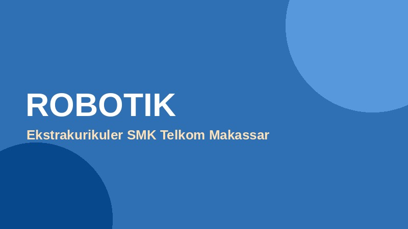

SMK Telkom Makassar
Ekskul Robotik mengajak siswa merancang, merakit, dan memprogram robot. Kegiatan ini melatih logika, kreativitas, dan pemecahan masalah.

| Hari | Jam | Tempat | Kegiatan |
|---|---|---|---|
| Selasa | 15.30 - 17.00 | Lab. Komputer 2 | Perakitan robot |
| Kamis | 15.30 - 17.00 | Lab. Komputer 2 | Pemrograman |
Ikuti kegiatan kami di Instagram Ekskul Robotik.
Dibuat oleh Kelompok 2 - Kelas XI
© 2026